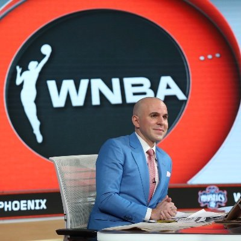

Matt Murphy
Matt Murphy is a play-by-play broadcaster and versatile communications professional. Since 2018, Matt has served as the television voice of the Delaware Blue Coats, the NBA G League affiliate of the Philadelphia 76ers. He is the youngest play-by-play broadcaster in the NBA G League at age 23.
More about Matt
“Matt Murphy is a talented young play-by-play man. He’s driven, approachable and
incredibly skilled. I’m so excited to watch this young man’s career.”
-Ryan Ruocco ESPN, YES Network, DAZN
